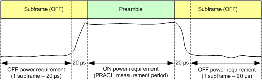
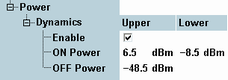

Transmission at excessive uplink power increases interference to other channels while a too low uplink power increases transmission errors. For PRACH transmission, 3GPP defines a time mask. The mask contains limits for the UL power during preamble transmission (transmit ON power), the UL power in the adjacent subframes (transmit OFF power) and the power ramping in-between.
The ON power is specified as the mean UE output power over the preamble (more exactly, over the PRACH measurement period, see Table "Measurement period for ON power"). For the OFF power, the mean power has to be measured both in the preceding subframe and in the subsequent subframe. A transient period of 20 µs next to the PRACH measurement period is excluded.
The following figure provides a summary of the time periods relevant for ON and OFF power limits.

The OFF power must not exceed -48.5 dBm. The ON power must be in the range -8.5 dBm to 6.5 dBm. The limits for ON and OFF power can be set in the configuration dialog.
